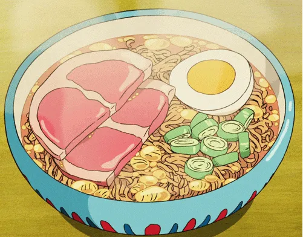

Home
Ponyo Ramen

Description
This is a simple and delicious bowl of ramen that you can make at home.
It's perfect for a quick meal or when you're craving something comforting.
Ingredients
- 100g of ramen noodles
- 100g sliced cured ham
- 2 cups of chicken broth
- 1 tablespoon of soy sauce
- 1 teaspoon of chicken fat
- 2 boiled eggs, halved
- Green onions for garnish
Instructions
- Cook the ramen noodles according to the package instructions.
- In a bowl add soy sauce, chicken fat and chicken broth.
-
Once the noodles are cooked, drain them and add them to the bowl with
the broth.
-
Top the ramen with sliced cured ham, boiled eggs, and green onions.
- Serve hot and enjoy your delicious bowl of Ponyo Ramen!